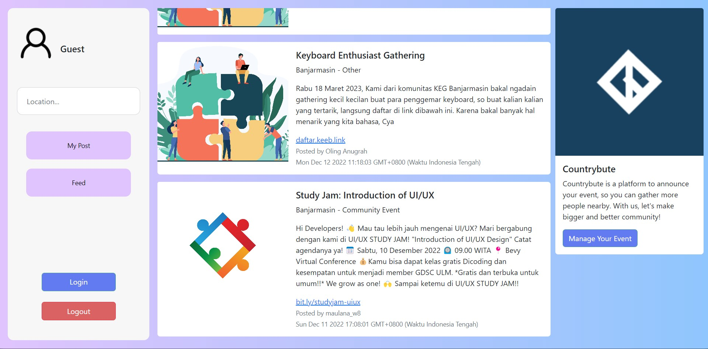
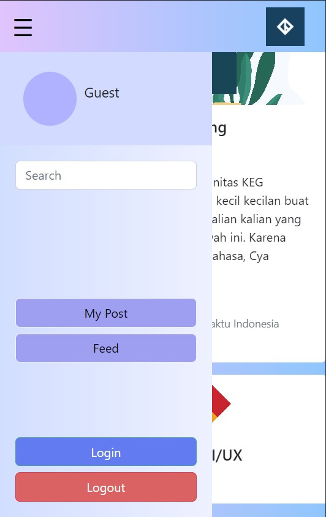
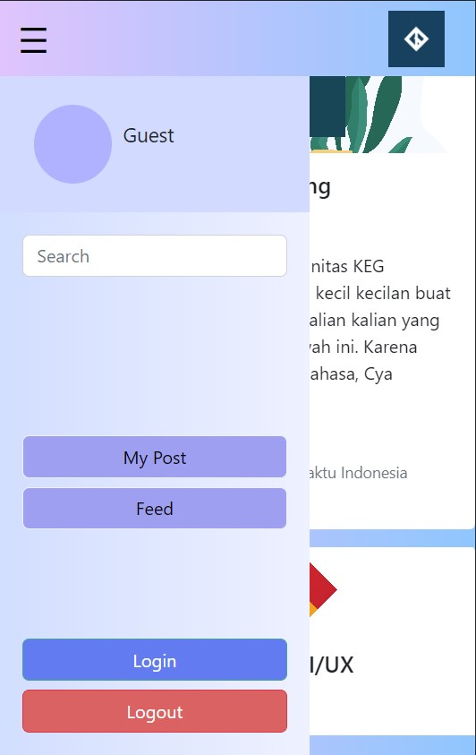
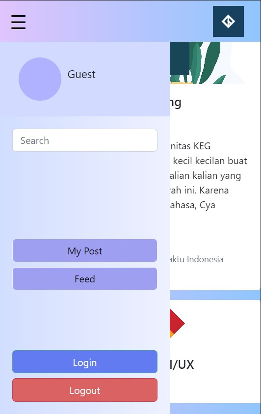
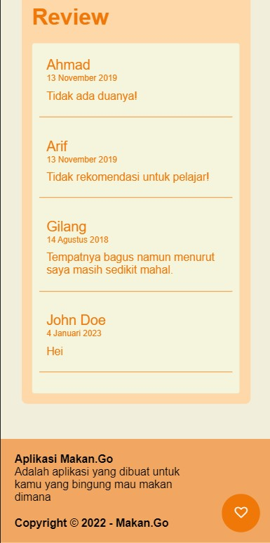
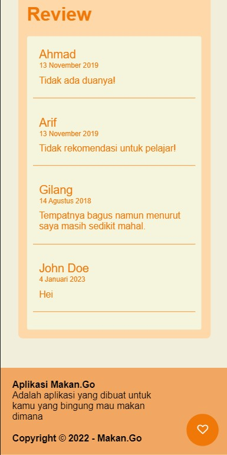

About
Skill
HTML
90%
CSS
80%
Javascript
80%
Firebase
75%
PHP
60%
Figma
60%
Curriculum Vitae
Summary
Oling Anugrah Fajar Pratama
I am an active IT Student of Lambung Mangkurat University, I am interested in web development, game development, and programming. I am experienced in developing a website using Javascript, Node Js, and Firebase for my submission and capstone project in independent study at Dicoding Indonesia. A student with great leadership, responsibility, discipline, and eager to learn new things especially about technology.
- Banjarbaru, South Borneo, Indonesia
- +62 895 3408 32802
- 2010817210028@mhs.ulm.ac.id
Education
Lambung Mangkurat University
Bachelor Degree Information Technology - GPA 3.70
SMAN 2 Banjarbaru (2017 - 2020)
Natural Science
Course / Certification
Front-End Web and Back-End Developer
Certified Independent Study at Dicoding Indonesia
Big Data using Python
Fresh Graduate Academy Digital Talent Scholarship 2022 - Cisco
Introduction to Cybersecurity
Cisco Networking Academy
Experience
Organization Experience
HMTI FT ULM - Banjarmasin, Indonesia
Member of Student Resources Division
- Responsible to guide new students about campus life
- Managing student resources for campus or organization events
- Participated in most of HMTI organization events committee
- Presided some of events organized by the association (Chief Executive of Musyawarah Besar HMTI 2021, Chief Executive of Screening HMTI 2022)
Independence Study MSIB Batch 3
Front-End Web and Back-End Developer - Dicoding Indonesia
August - December 2022
- Learning about front-end web development from beginner to expert
- Learning about back-end web, making a simple Restful API
- Created 4+ website and web apps with spesific criteria
- Learning soft skill needed to become a programmer
See Detail in ATS Format
Portofolio
Countrybute
is a Web-based App that can be use for people or community to announce their event, campaign, etc to gather more people into community In this project, I use Firebase as back-end services to implement authentication and database. As for CSS framework, I use Boostrap 5.2 to maintain responsivness of this App, and Javascript for programming language. Main feature of this website is people can create post which authenticated with their account to share to everyone who visit the website. This project was made for Studi Independen Kampus Merdeka x Dicoding as a Capstone Project

 

Live Demo

Makan.Go
is a Website I made to finish my Front-End Expert Dicoding Final Submission. The Requirement of this project is to make a website based from given API (Food API) with many criteria such as PWA, Optimalized, and Automation Testing. In this project, I also learn about accesibility of a website, Mobile First Approach, and Javascript Clean Code. Framework such as CSS or Javascript framework are prohibited, only node.js and vanilla js were allowed.
 

This is a project I made to finish my Dicoding Fundamental Front-End Class final submission. Main point of this submission is about consuming API
, DOM Manipulation, and to make a Single Web Apps. I use Materializecss as css framework.
Live Demo